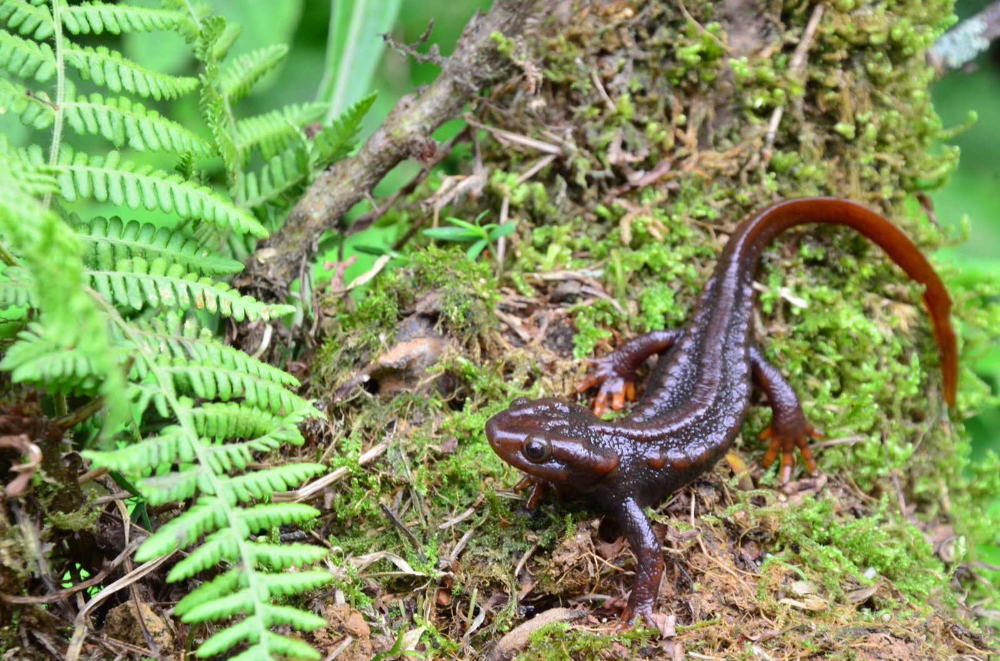
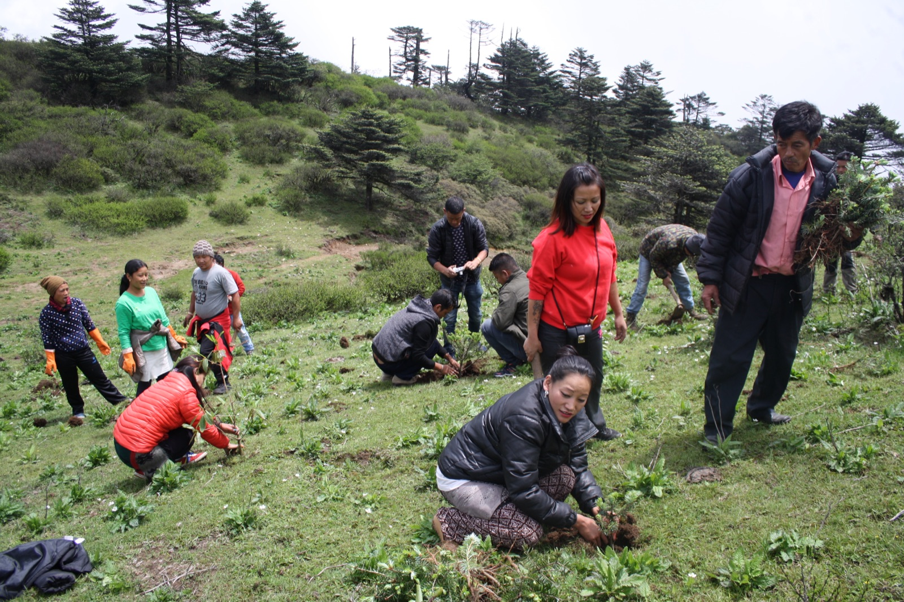
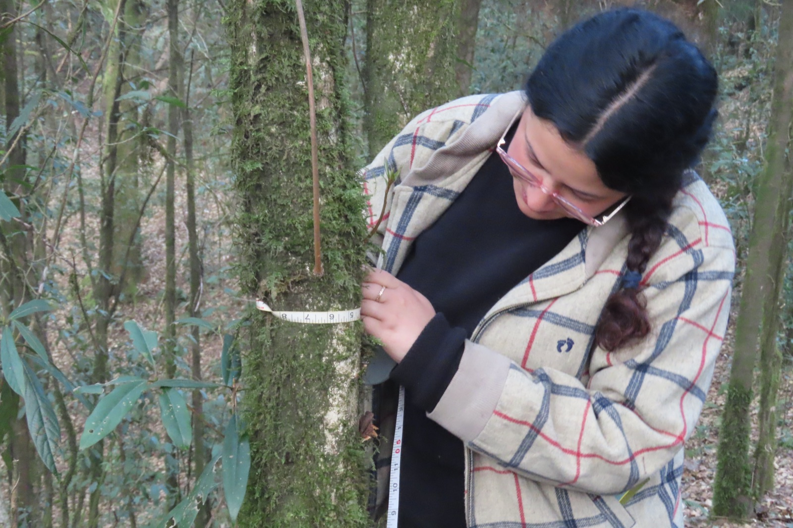
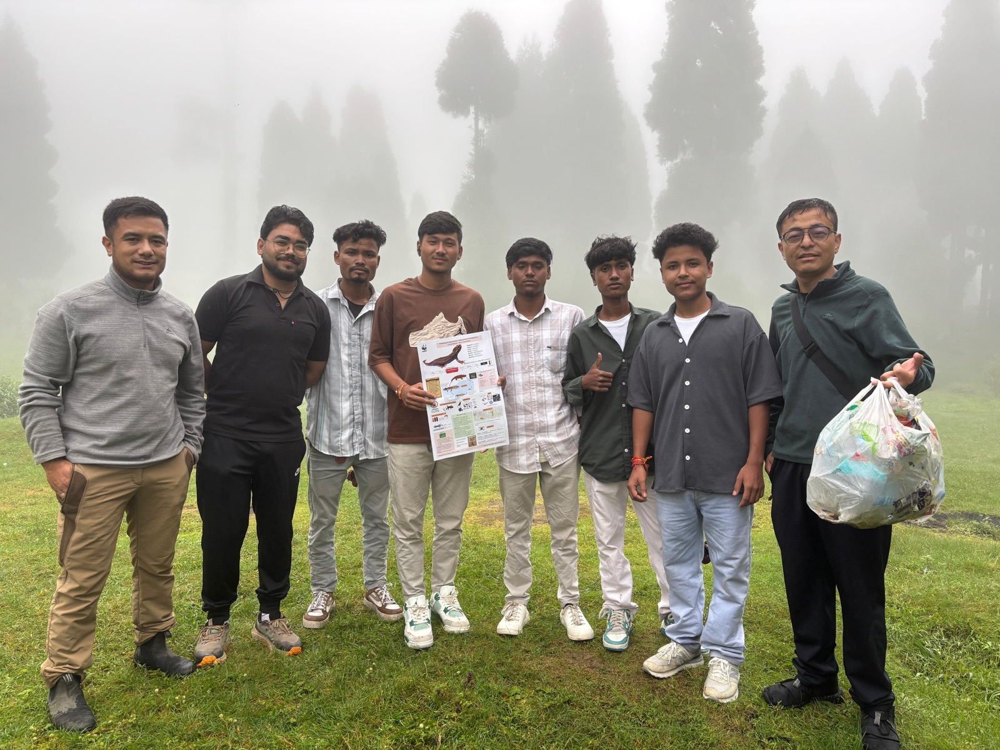
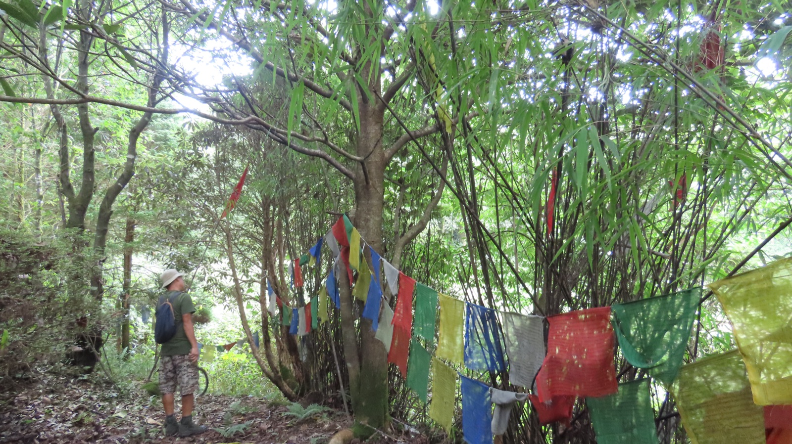
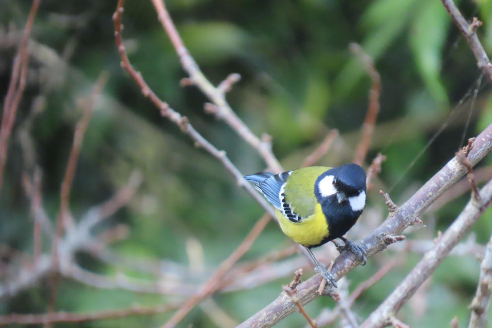
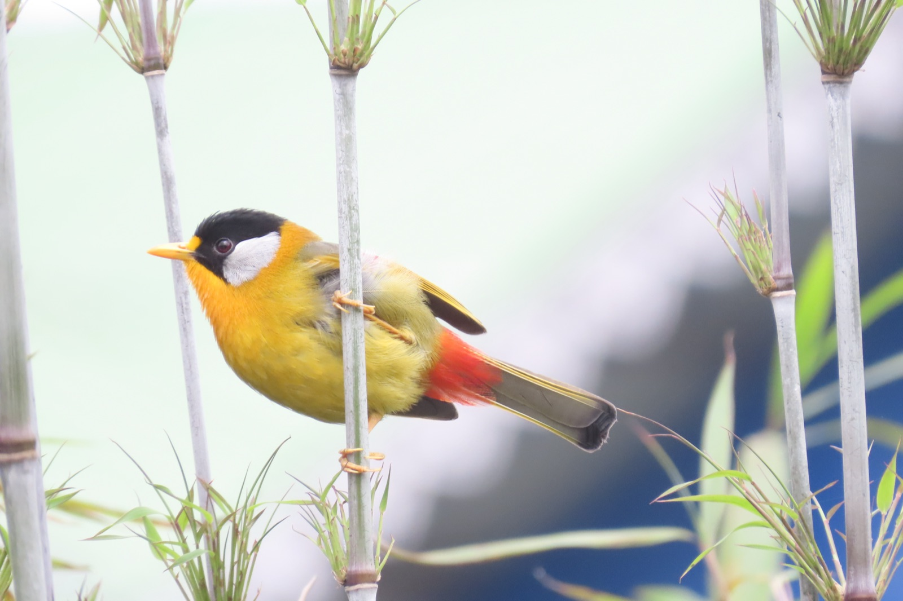
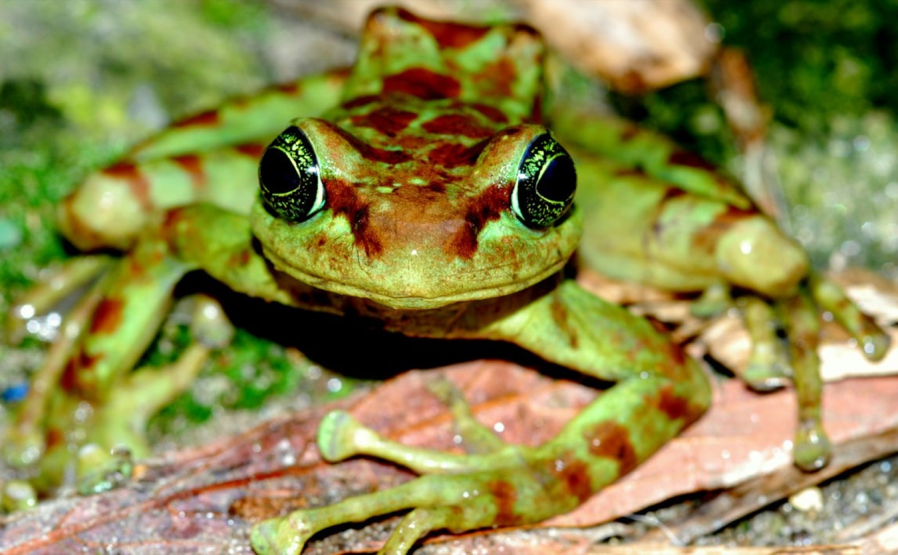
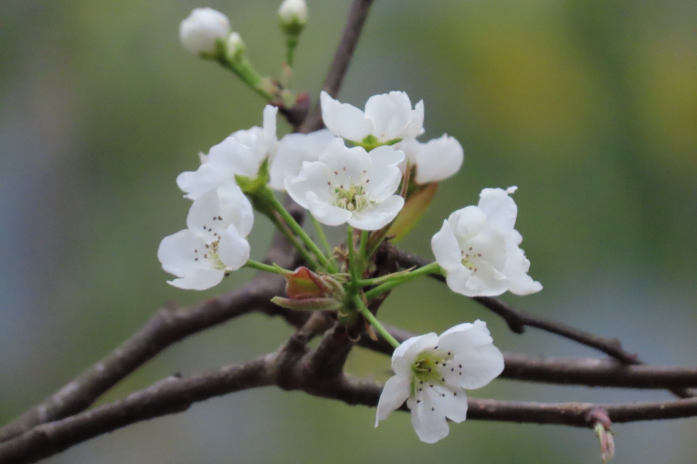

Biodiversity & wildlife conservation
We protect globally threatened, endemic plants, animals, insects, and birds across the Kanchenjunga landscape — observing Wildlife Week and working to keep fragile habitats intact.
We work where conservation, health, and livelihood meet — alongside tea-garden communities and Gram Panchayats across the Darjeeling Hills and Siliguri. Here is what that looks like on the ground.

From protecting endemic species to building household sanitation, each program answers a real need in the Eastern Himalaya.
We protect globally threatened, endemic plants, animals, insects, and birds across the Kanchenjunga landscape — observing Wildlife Week and working to keep fragile habitats intact.
For over a decade we have campaigned against tobacco use, focusing on young people and empowering them to choose healthier lives.
We run free medical check-ups, HIV screening and testing, and anti-rabies vaccination drives, bringing care to communities that need it most.
We take learning beyond the classroom with school programs, nature camps, and World Environment Day observances that connect students to their mountain home.
Our afforestation work includes rhododendron plantation at Sandakphu, carried out in partnership with the SSB to restore and green the high ridges.
In a region prone to landslides, we lead response and preparedness programs that help vulnerable communities stay safe when the slopes give way.
We support the construction of individual household latrines under the Swachh Bharat Abhiyan, improving dignity and health for families across the hills.
We raise awareness of the National Food Security Act, advance gender mainstreaming, and build advocacy partnerships — including with the police — to protect rights.
We organise garbage collection and site restoration drives, clearing waste and bringing degraded sites back to life across plantations and panchayats.
Biodiversity, wildlife, tree plantation, and cleanup work together to keep the Kanchenjunga landscape and its endemic species intact for the generations to come.
Health camps, anti-tobacco advocacy, sanitation, and education meet the daily needs of mountain communities — because a healthy environment and healthy people are one goal.
A glimpse of FOSEP's programs in action — from planting and monitoring to the species we work to protect.








Volunteer for a camp, back a plantation, or become a member and help sustain this work across the hills.